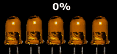
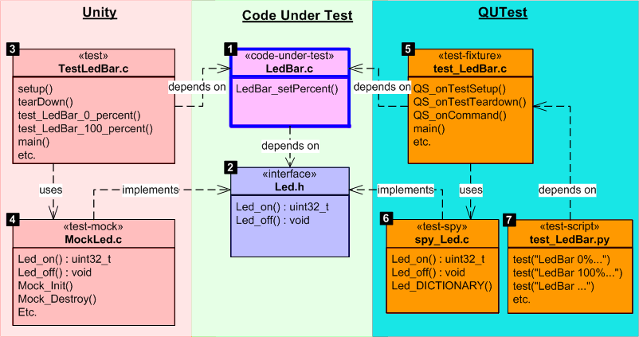
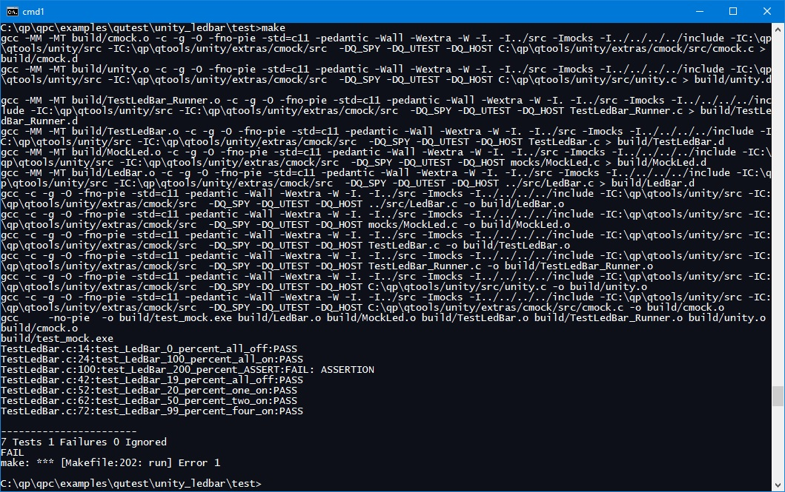
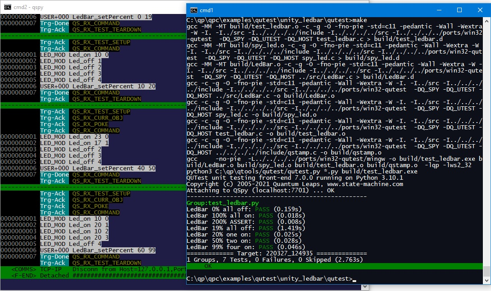

QTools
7.4.0
Collection of Host-Based Tools
This example is loosely based on Matt Chernosky's video blog post "Test-driving with mocks instead of hardware". In this video blog, Matt presents a technique called the mock object, which in the traditional unit testing approach is needed to verify complex, multi-stage interactions between the CUT and the collaborator impersonated by the mock object.
The main purpose of this example is to show the traditional approach (with the mock object) and contrast it with the much simpler solution enabled by the QUTest approach. Of course, to make comparisons meaningful, both approaches test the same CUT.

The CUT in this example implements a simple bar of 5 LEDs that displays percentage, as shown in the animation below. The "LedBar device" interacts with the discrete LEDs by turning them on and off to achieve the desired effect. The main objective of this example is to demonstrate how to verify the collaboration with the discrete LEDs, even without the actual hardware.

The LedBar CUT is located in the file LedBar.c in the directory qpc\examples\qutest\unity_ledbar\src. The CUT consists of just one function LedBar_setPercent(), which turns the individual LEDs on and off such that they display the desired percent parameter. The function LedBar_setPercent() returns the total power consumption (in microwatts) of all LEDs that are turned on.
The low-level interface to the LEDs is defined below (Led.h). The individual LEDs are selected by an index parameter. Each individual LED can be turned on by means of the LED_on() function. The LED_on() function returns a value, which corresponds to power consumption of this LED while on. The LED can be turned off by the LED_off() function, which returns void.
The diagram below shows the relationships between the CUT and the test code: Unity case on the left and QUTest case on the right. In both cases, the LedBar CUT interacts with the hardware through the Led.h interface. The explanation section below the diagram clarifies the interesting elements of the diagram.

Center: Code Under Test
LedBar.c file contains the Code Under Test (CUT). Led.h interface. This interface abstracts the LEDs and is all that the CUT needs to "know" about the hardware. Left: Unity testing framework (traditional approach)
The TestLedBar.c file implements the Unity test fixture, which calls the CUT and verifies that it performs as expected.
NOTE: A Unity test fixture for a mock requires a special "test runner", which initializes and cleans up after the mock. This "test runner" must typically be generated automatically, as it is too complex to code manually.
The Unity test fixture uses the MockLed.c implementation of the Led.h interface. The mock object implemented in MockLed.c needs to be "programmed" for each expected scenario before calling the CUT. Thus the structure of conventional tests with a mock is "backwards", meaning that you first specify the expectations and the test ends with a call to the CUT.
NOTE: This mock-object must typically be generated automatically, as it is too complex to code manually. Here, the mock- object was generated by means of the CMock tool, which is included with Unity, but requires installation of the ruby programming language.
Right: QUTest testing framework (simplified approach)
test_LedBar.c file implements the QUTest test fixture, which calls the CUT, but it does NOT check whether it performs as expected. spy_Led.c implementation of the Led.h interface. This spy test double is much simpler than the mock-object used by Unity, so it can easily be coded manually. test_LedBar.py test script. This test script sends commands to the test_LedBar.c fixture and verifies the generated output against the expectations of the test. The complete code for the mock Unity example is provided in the QP/C framework directory C:\qp\qpc\examples\qutest\unity_ledbar\test_unity. To run the mock Unity test (on Windows), open a command-prompt and type:
cd C:\qp\qpc\examples\qutest\unity_ledbar\test_unity make
Makefile will also work on Linux and macOS. The only difference from Windows is that you open a terminal window and change the directory to ~/qp/qpc/examples/qutest/unity_ledbar/test.This will build the test fixture as a host executable and then it will run it. The screen shot below shows the output produced from the make command.

The complete code for the mock Unity example is provided in the QP/C framework, directory C:\qp\qpc\examples\qutest\unity_ledbar\test. To run the mock test (on Windows), open a command prompt and type:
qspy
This will start the QSPY host utility with the TCP/IP connection to the Target.
Next, open a second command prompt window and type:
cd C:\qp\qpc\examples\qutest\unity_ledbar\test make
Makefile will also work on Linux and macOS. The only difference from Windows is that you open a terminal window and change the directory to ~/qp/qpc/examples/qutest/unity_ledbar/qutest.This will build the test fixture as a host executable and then it will run the test script (in Python). The screen shot below shows the output produced in these two command-prompt windows.

The following listing shows the "spy-object" (file spy_led.c) test-double for the low-level LED module. The explanation section following the listing clarifies the interesting lines of code (lines starting with [xx] labels).
"qpc.h" header file includes the QP/C framework, which contains the QUTest interface. Typically, you need to include this header file in QUTest test doubles. The "Led.h" header file specifies the interface to the code being impersonated by this "spy-object". The whole purpose of the spy-object is to implement this interface such that the CUT can call use it as its collaborator.
NOTE: The CUT does not "know" that it is collaborating with a test double (the spy-object in this case).
led_power[] array contains the default power ratings for the individual LEDs in the LED-bar. These values will be returned from the fake Led_on() implementation (if not overridden by the "Test Probe"). Led_DICTIONARY() function produces the dictionaries for the spy-object. This function is not part of the real LED interface (see Led.h in the src directory), but is needed only for testing. Led_off() implementation, which generates an application-specific QS trace record to report the call and the parameter to QSPY. Led_on() implementation. ret variable will be the power rating for this LED returned from this function. The variable is initialized from the led_power[] array, which contains the default power rating for the LEDs. QS_TEST_PROBE_DEF() defines a Test Probe for this function (notice the &Led_on function-pointer parameter). This Test Probe retrieves a value set for this function from the test-script. (If no value has been set, the QS_TEST_PROBE_DEF() retrieves value 0). QS_TEST_PROBE() macro executes the enclosed snipped of code only if the Test Probe (defined at label [9]) is not zero. ret value is updated from the value of the Test Probe qs_tp_. NOTE: This demonstrates how to program a return value in a spy-object. This corresponds directly to the same capability of traditional mock-objects.
NOTE: Test Probe is just one way in which a pre-programmed value can be returned from a fake function. This option is illustrated in test script [25]. Another way in QUTest is to use the poke() test command to alter the values in the
led_power[]array. This option is illustrated in test script [21].
ret value is returned to the caller (CUT). The following listing shows the test fixture for the LedBar tests (file test_ledbar.c). The explanation section following the listing clarifies the interesting lines of code (lines starting with [xx] labels).
"qpc.h" header file includes the QP/C framework, which contains the QUTest interface. Typically, you need to include this header file in QUTest test doubles. NOTE: for test fixtures based on the QP/C++ framework, you need to include the
"qpcpp.h"header file.
"LedBar.h" header file specifies the interface to the CUT. Led_DICTIONARY() function prototype is declared directly in the test fixture. This is the only extension from the "Led.h" interface implemented in the spy-object. main() function of the test fixture initialzies the QF framework. main() function of the test fixture initializes the QS software tracing. Led_DICTIONARY() function outputs the QS dictionaries for the spy-object. LedBar_setPercentn() CUT is produced as well. QF_run() function enters the event loop to wait for commands from the test script. The following listing shows the test script for the LedBar tests (file test_LedBar.py). The explanation section following the listing clarifies the interesting lines of code (lines starting with [xx] labels).
TestLedBar.c Unity test fixture. Compared to the mock-object approach, however, the QUTest test script has the more intuitive structure, in which a command triggering CUT is followed by the expectations. In contrast, the traditional Unity tests with mock-object were structured "backwards" (the expectations preceded the call to CUT).Test: "LedBar 0% all off" checks that all LEDs are turned off to display 0%
LedBar_setPercent() CUT with the 0 percent argument. LED_off() function from the spy-object. LedBar_setPercent() function from the CUT. Note that the returned total power consumption is zero. Test: "LedBar 100% all on" checks that all LEDs are turned on to display 100%
LedBar_setPercent() CUT with the 100 percent argument. LedBar_setPercent() function from the CUT. Note that the returned total power consumption is 70. Test: "LedBar 19% all off" checks that all LEDs are turned off to display 19%
LedBar_setPercent() CUT with the 19 percent argument. LED_off() function from the spy-object. LedBar_setPercent() function from the CUT. Note that the returned total power consumption is 0. Test: "LedBar 20% one on" checks that one LED is turned on to display 20%
LedBar_setPercent() CUT with the 20 percent argument. LedBar_setPercent() function from the CUT. Note that the returned total power consumption is 10. Test: "LedBar 50% two on" checks that two LEDs are turned on to display 50%
pack("<LL", 25, 15). LedBar_setPercent() CUT with the 50 percent argument. LedBar_setPercent() function from the CUT. Note that the returned total power consumption is 40, which is due to poking the data into the led_power array. Test: "LedBar 99% two on" checks that two LEDs are turned on to display 99%
Led_on Led_on LedBar_setPercent() CUT with the 99 percent argument. Led_on has been called, and that it returned 17. Led_on has been called, and that it returned 13. LedBar_setPercent() function from the CUT. Note that the returned total power consumption is 60, which is due to using test-probes to alter the return values returned from Led_on().